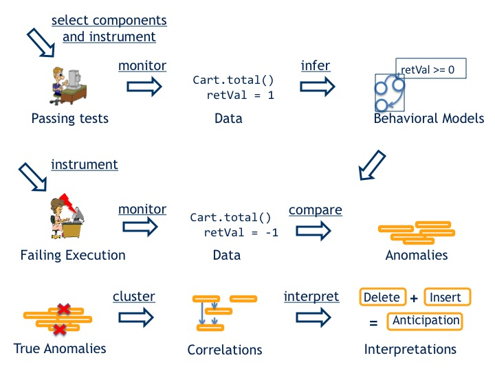
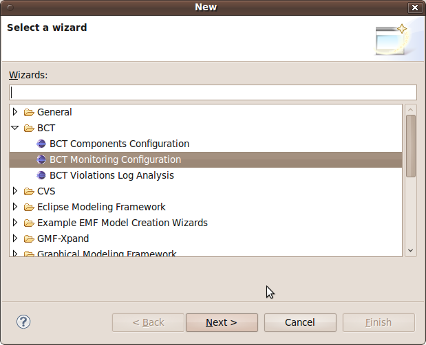

Overview
Software developers can successfully use BCT to diagnose faults.
Figure 1 shows the activities performed by BCT to help
developers in diagnosing faults:
- Software developers define the components to monitor and use BCT to instrument these components with
data-recording monitors.
- Developers run the system tests, meanwhile the instrumented monitors record data about the executions.
- BCT infers models that generalize the observed behavior.
- Developers use BCT to instrument the system with checking monitors.
- While the system runs either in-the-field or in-house, during debugging sessions,
BCT compares runtime data with models and identifies violations, i.e. behavioral anomalies
- After a failure, developers use BCT to analyze anomalies.
BCT filters out false positives, and correlate the remaining ones to help developers in the diagnosis
- Developers then can use BCT to automatically interpret interaction anomalies.

Figure 1 - Diagnosing Faults with BCT
Define a monitoring configuration.
The first step of the technique is the identification of the components to monitor.
This activity is performed by defining a Monitoring Configuration
using the Monitoring Configuration Wizard.
In order to run BCT you need at least a Java project to monitor. After clicking on File>New>Other... developers can select
new Monitoring Configuration within the BCT folder (see Figure 2).
A wizard dialog will pop up asking for information about the Monitoring Configuration to create (Figure 3).

Figure 2 - Monitoring Configuration Wizard
Figure 3 - Monitoring Configuration Wizard